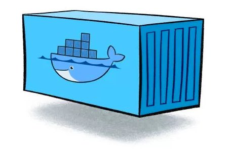

Introduction
Have you ever hit a roadblock while working on a Python project because some package just won’t cooperate? Or maybe you’ve tried running someone else’s code, and it throws errors left and right because your setup isn’t exactly like theirs. Frustrating, right?
That’s where tools like virtual environments, Docker containers, and virtual machines come to the rescue. They might sound a bit intimidating at first, but they’re basically your secret weapons for keeping your data science projects organized, running smoothly, and ready to share with others.
In this post, I’m going to break down these three tools in plain language, show you what they’re good at, and help you figure out when to use them. By the end, I hope that you’ll have a clear idea of how these tools can make your projects easier to manage and how they can save you from the “But it worked on my machine” problem.
The Age Old Problem
Data science projects often involve working with different libraries, versions of Python, or even entirely different programming languages. These projects can easily become complicated, especially when it comes to managing dependencies. For example, one library might need a specific version of Python, while another requires a different version. Or perhaps your code works perfectly on your laptop, but when you share it with a teammate, it doesn’t run as expected even though both of you have the same Python packages.
This is where tools like virtual environments, Docker containers and virtual machines (VMs) come into play. They allow us to create isolated environments for our projects, where dependencies, libraries, and even entire operating systems can be configured without interfering with one another. These tools help us overcome the challenge of “dependency hell,” where conflicting software versions create frustrating problems.
In simple terms, they let us work in controlled environments where everything is set up exactly how we need it, ensuring that projects run smoothly on any machine. Let’s dive into how each of these tools works and why they’re essential for managing complex data science workflows.
Conda Virtual Environments: Your Project’s Personal Workspace
Imagine you’re working on a data science project. You’ve got your code, your data, and your libraries—tools like pandas, numpy, and matplotlib. The challenge is that each project might need a different version of these tools. For example, one project may work best with an older version of numpy, while another requires the latest version. If you only have one toolbox, things can get messy fast, with tools from different projects clashing.
Here’s where Conda virtual environments come in. Think of each Conda environment as its own toolbox, dedicated to a single project. Within each toolbox, you can choose exactly which versions of the libraries you need. It’s like having multiple types of hammers: one for woodworking, one for mechanics, and one for crafting, each suited to a different job. Conda allows you to have these different “hammers” (versions of libraries) in separate toolboxes (environments), so they don’t get mixed up and cause issues.
For example, if one project requires numpy version 1.18 and another needs version 1.21, you can have both versions installed in separate environments. When you switch between projects, you just switch your environment, and Conda makes sure you’re using the right version of numpy without any interference. With Conda, you can confidently work on multiple projects, knowing that the right tools (libraries) are always available, and they won’t conflict with each other.
Docker Containers: A Portable, Self-Contained Toolbox
Let’s talk about Docker containers, which are a bit like those toolboxes, but with an important upgrade. Imagine you have a toolbox filled with only the specific tools you need for a job—like a hammer, wrench, and screwdriver for fixing a car. These tools are carefully chosen for a particular task. Now, imagine this toolbox is so well-organized that no matter where you bring it, whether to your friend’s house or a different city, it’ll work perfectly because it has exactly what you need.

A Docker container works similarly by packaging up not just your code, but also all the software dependencies like libraries, files from other non-Python programming languages and other tools into one self-contained unit. The key difference from a virtual environment is that the container includes everything required to run your project, from the libraries all the way down to low-level configurations, but it still relies on the host operating system’s core (the kernel). This allows Docker to be much more portable and consistent when moving between different computers, because you can ensure that your environment behaves the same everywhere. One restriction is that a Docker container needs to be OS specific. For example, a Docker container that is made for a MacOS machine cannnot be run on a Window machine and vice versa.
Virtual Machines: The Fully Independent Setup
If Docker containers are like highly portable toolboxes that share the same core tools as your operating system, a Virtual Machine (VM) is more like setting up a completely separate computer within your computer. Imagine you’re running a Windows laptop but want to try out Linux without messing with your current setup. Instead of installing Linux directly, you can create a VM that acts as its own computer, complete with its own operating system, software, and configurations. You can use this VM just like a physical machine, but it’s running on top of your main operating system (the host machine).
The biggest difference between VMs and Docker containers is that VMs are fully self-contained, meaning they have their own operating system and are not dependent on the host machine’s kernel. This makes them more resource-intensive because you’re essentially running a second operating system on top of your host OS. For data science, this means VMs can offer a more isolated environment, which can be useful when you need to simulate different operating systems or want to keep everything in one self-contained space without worrying about interference from the host system. However, this comes with higher overhead, as VMs consume more resources (like memory and CPU) compared to containers or virtual environments.
Choosing the Right Tool for the Job

Now that we’ve explored Virtual Environments, Docker Containers, and Virtual Machines, it’s important to understand when each of these tools is best suited for your project. Each of them has its own strengths and weaknesses, and knowing which one to use can make your data science work smoother and more efficient.
Virtual Environments (Conda): If you’re working on a data science project where you need to manage different versions of Python libraries like
pandas,NumPy, orSciPy, then a virtual environment is likely the way to go. It’s lightweight and fast to set up, making it a good choice for smaller projects or tasks where you just need a clean and isolated environment for Python dependencies.Docker Containers: Docker shines when you need a portable, reproducible environment that can run on any machine without worrying about specific OS configurations. If you need to work on a project across different machines or collaborate with others who might have different setups, Docker is your best bet. It packages your environment and code into a single, easy-to-share container that behaves consistently across all platforms (as long as the underlying OS is compatible). **Docker is ideal for larger projects that involve a variety of tools and dependencies outside of just Python.
Virtual Machines (VMs): VMs are perfect when you need a completely isolated environment with its own operating system. They’re ideal for running different operating systems and testing software across different environments. While VMs are more resource-intensive, they offer the most independence from your host machine. If you need the full control of a different OS or have specific use cases that require an entire system (e.g., certain machine learning frameworks that are only available on Linux), a VM might be the right choice.
My Personal Experience
Ultimately, choosing between a virtual environment, Docker, or a VM really comes down to the scale of your project and what you’re trying to achieve. Personally, I find that for most day-to-day data science tasks, a virtual environment (Conda) is the easiest and most straightforward option. It’s lightweight, quick to set up, and works well for managing different Python libraries. But if your project is more complex, or if you’re collaborating with others who might have different setups, Docker really shines. It gives you the portability and consistency you need across different systems. For VMs, I never had to use them before, but I can see how they can be beneficial in larger projects where a deeply isolated computing environment is required.
Conclusion
When it comes to data science, managing your environment is crucial for ensuring your work is consistent and reproducible. Virtual environments like Conda are perfect for most of us, keeping our projects neat and dependencies in check without too much setting up. But if you’re handling complex setups or need a bit more portability, Docker is your friend, helping you take your environment anywhere with confidence. And if you’re dealing with something on a much larger scale, where you need full isolation and flexibility, VMs can offer the needed requirement.
For me, I’ve found that having these tools in my back pocket has made a huge difference in preventing headaches down the road. The ability to ensure my projects run smoothly, no matter where I’m working, has been a game changer. Whether you’re just starting or looking to level up your workflow, getting familiar with these technologies will help you keep your data science projects tidy, consistent, and reproducible.
{kind=link}
{kind=link}
{kind=link}